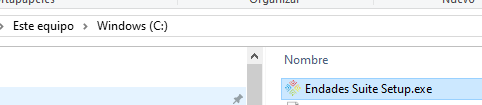
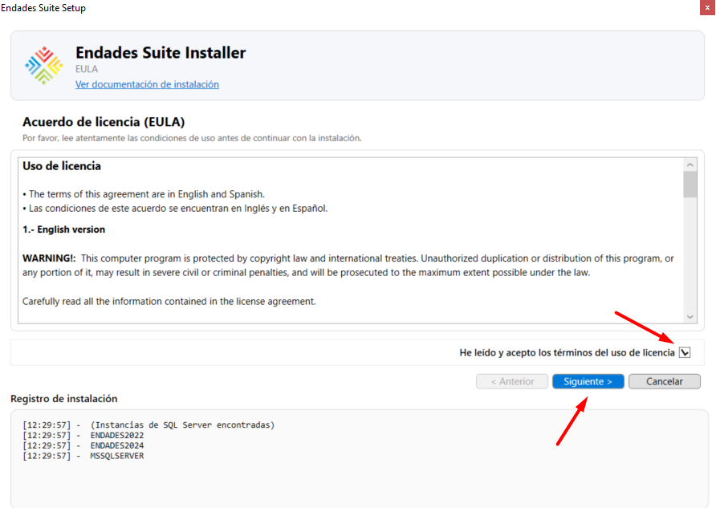
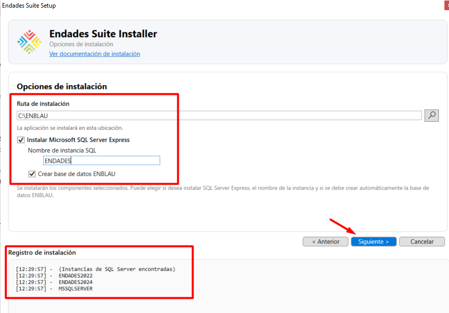
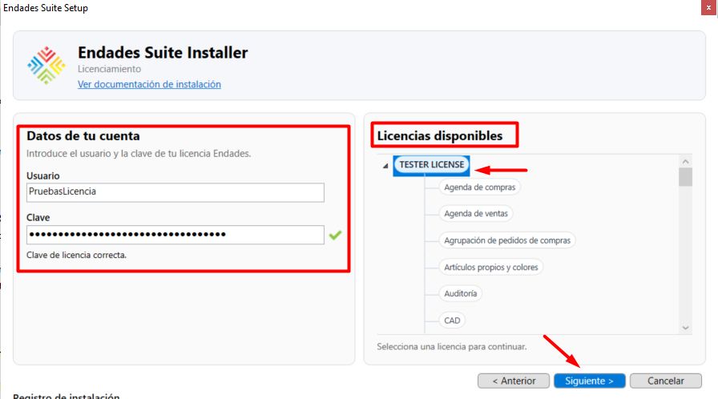
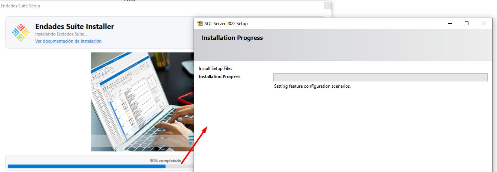
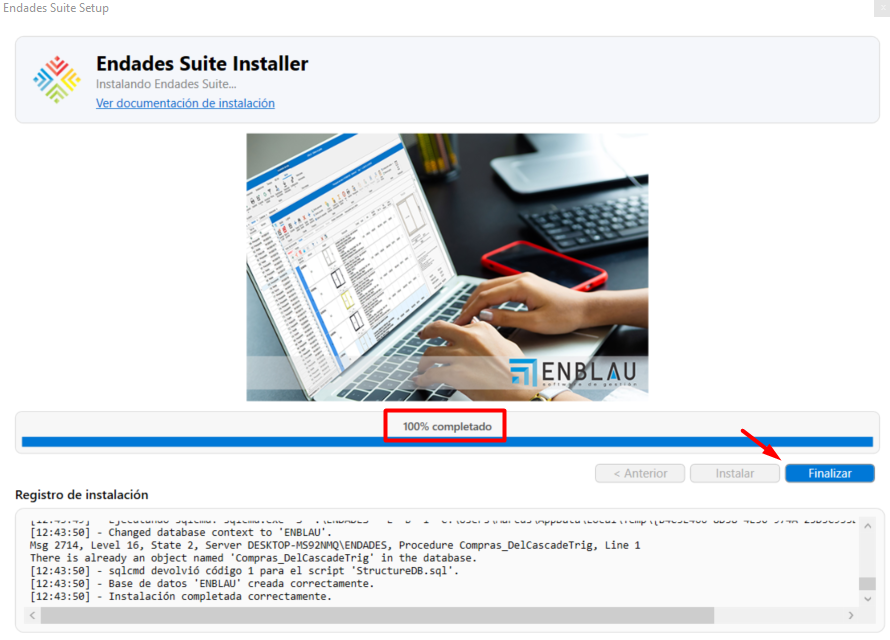
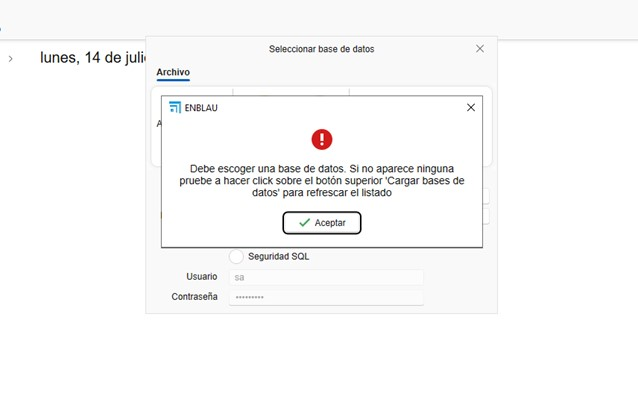
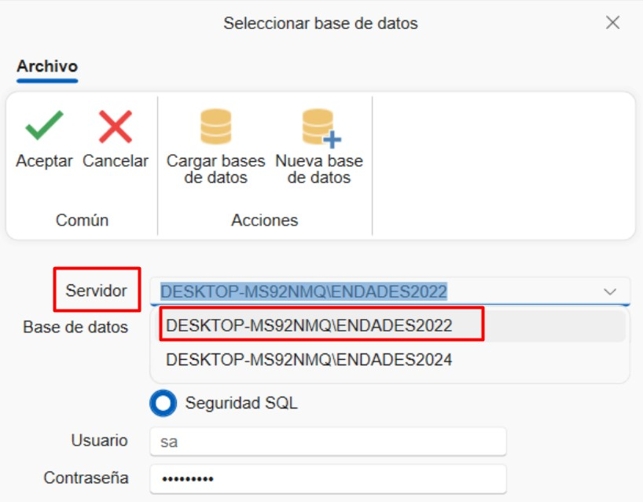
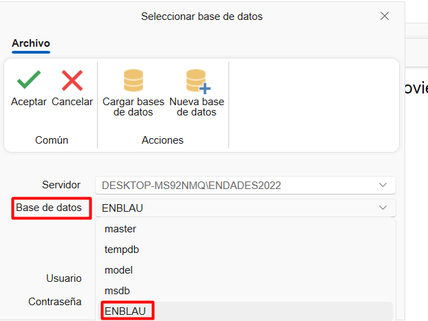

Instalador Endades Suite
1. Instalação completa da Endades Suite
Descarregue o instalador Endades Suite Setup.exe do caminho fornecido pela ENDADES. Antes de proceder com a instalação, siga as recomendações na secção Configuração do Sistema.
2. Executar o instalador
2.1. Iniciar a instalação
Execute o ficheiro Endades Suite Setup.exe fornecido pela ENDADES com um duplo clique.

2.2. Processo de instalação passo a passo
Ao iniciar a instalação, será aberta a janela Endades Suite Installer. Siga estes passos:
Passo 1: Acordo de licença
- Aceite o acordo de licença (EULA) marcando a caixa correspondente.
- Clique em Seguinte.

Passo 2: Configuração da instalação
- Especifique o caminho onde o ENBLAU será instalado.
- Introduza o nome da instância SQL.
Importante: Por defeito, aparece ENDADES2022. Se já existir uma instância com esse nome, a instalação mostrará as instâncias já criadas no registo de instalação e não avançará até selecionar um nome de instância diferente.
- Clique em Seguinte.

Passo 3: Configuração da licença
- Introduza o nome de utilizador e palavra-passe fornecidos pela ENDADES.
- Na secção Licenças disponíveis aparecerá a licença ativa.
- Selecione a licença e clique em Seguinte.

Passo 4: Confirmar instalação
- Reveja a configuração selecionada.
- Clique em Instalar para iniciar o processo.

Passo 5: Progresso da instalação
- O sistema instalará a instância do SQL Server e a base de dados ENBLAU.
- Este processo pode demorar vários minutos.

Passo 6: Conclusão
- Uma vez concluído a 100%, clique em Concluir.

3. Seleção da base de dados no ENBLAU
3.1. Primeira execução do ENBLAU
Ao abrir o ENBLAU pela primeira vez, será solicitada a seleção de uma base de dados. Clique em Aceitar.

3.2. Configurar a ligação no enCONNECT
- Na janela enCONNECT (aplicação para gerir ligações):
- No campo Servidor, selecione ou escreva a instância criada, por exemplo:
nome_servidor\ENDADES2022.

- Ligue e carregue as bases de dados:
- Clique em Carregar base de dados.
- Expanda a lista de bases de dados disponíveis.
- Selecione por exemplo: ENBLAU da lista.

Nota: Para mais informações sobre problemas durante a instalação, consulte Possíveis Erros.
 Español
Español
 English
English
 Italiano
Italiano
 Português
Português